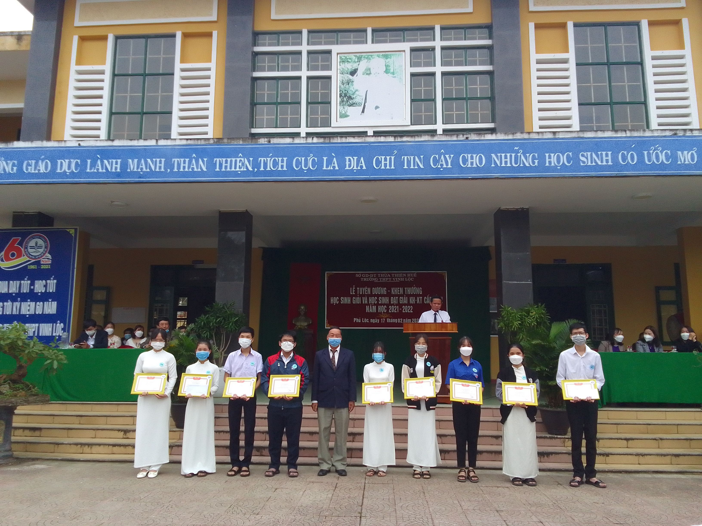
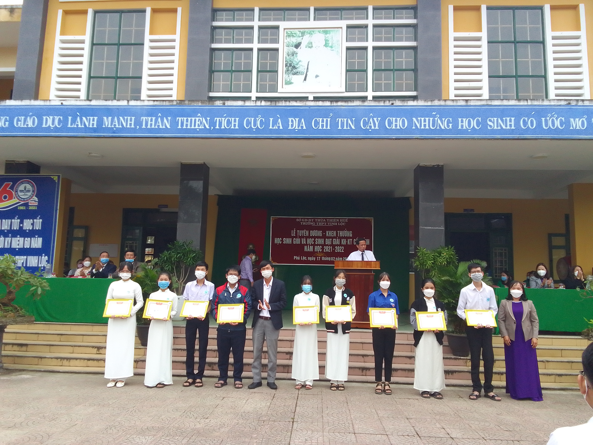

Trong không khí hân hoan kỷ niệm 92 năm Ngày thành lập Đảng Cộng sản Việt Nam, nhằm tôn vinh các em học sinh đạt thành tích cao trong Kỳ thi chọn Học sinh giỏi và Cuộc thi Khoa học kĩ thuật cấp tỉnh, sáng ngày 17/02/2022, Trường THPT Vinh Lộc tổ chức Lễ Tuyên dương-Khen thưởng học sinh đạt giải Kỳ thi chọn học sinh giỏi cấp tỉnh, học sinh đạt giải khoa học-kỹ thuật năm học 2021-2022.
Đến tham dự buổi Lễ, nhà trường vinh dự đón tiếp đại diện lãnh đạo chính quyền các xã trên địa bàn; các ông bà là đại diện cho các Quỹ học bổng, các Hội cựu học sinh Trường THPT Vinh Lộc, các tổ chức, cá nhân quan tâm đến sự nghiệp giáo dục của nhà trường. Buổi Lễ còn có sự hiện diện của Đại diện Hội CMHS, quý phụ huynh các em đạt thành tích được khen thưởng. Về phía nhà trường, có sự tham dự đông đủ của lãnh đạo nhà trường, TTCM, GVCN, GV bồi dưỡng và đại diện học sinh các lớp trong nhà trường.
Phát biểu tại buổi Lễ, thầy giáo Nguyễn Văn Tuấn - Hiệu trưởng nhà trường đã biểu dương sự tận tình của đội ngũ thầy cô giáo, sự nỗ lực không ngừng của các em học sinh trong thời gian vừa qua. Dù dạy học trong hoàn cảnh dịch bệnh (vừa kết hợp dạy trực tuyến và trực tiếp), nhưng với sự quyết tâm của các em học sinh, trong Kỳ thi chọn học sinh giỏi cấp tỉnh năm học 2021-2022, trường đạt 53 giải (trong đó có 15 giải Nhì, 14 giải Ba, 24 giải Khuyến khích). Trong Cuộc thi KHKT cấp tỉnh, trường có 01 sản phẩm dự thi và đạt giải Nhì. Thay mặt nhà trường, thầy Hiệu trưởng gửi lời cảm ơn sâu sắc đến sự quan tâm của các cấp lãnh đạo, các cấp chính quyền địa phương, các tổ chức, cá nhân có tấm lòng hảo tâm luôn đồng hành với sự nghiệp giáo dục của nhà trường. Đặc biệt, trong những năm qua, nhà trường luôn nhận sự ủng hộ của các Hội khóa, các Cựu học sinh Vinh Lộc, sự đồng hành ấy đã thể hiện truyền thống hiếu học, tình nghĩa thắm thiết và sự chăm lo cho con em quê hương mình của thế hệ đàn anh đi trước.
Tại buổi Lễ, từ sự ủng hộ của các Quỹ học bổng, Hội cựu học sinh Vinh Lộc, các tổ chức, cá nhân, nhà trường đã Tuyên dương – Khen thưởng cho học sinh đạt giải và giáo viên dạy bồi dưỡng trong Kì thi chọn học sinh giỏi cấp tỉnh, học sinh đạt giải Khoa học kĩ thuật năm học 2021-2022, học sinh đạt giải Hội khỏe Phù Đổng cấp tỉnh (năm 2021) với tổng số tiền 112.600.000 đồng.
Trong giai đoạn thầy và trò đang nỗ lực vượt qua những khó khăn của dịch bệnh Covid-19 để dạy học, sự đồng hành, quan tâm của các cấp, các ngành, của quý mạnh thường quân là nguồn động viên to lớn để thầy và trò Trường THPT Vinh Lộc tiếp tục cố gắng không ngừng thi đua dạy tốt - học tốt.
Một số hình ảnh:
Thầy Nguyễn Văn Tuấn-Hiệu trưởng nhà trường phát biểu tại buổi Lễ

Trao thưởng cho học sinh đạt giải Khoa học Kĩ thuật cấp tỉnh
 Khen thưởng học sinh đạt giải học sinh giỏi cấp tỉnh